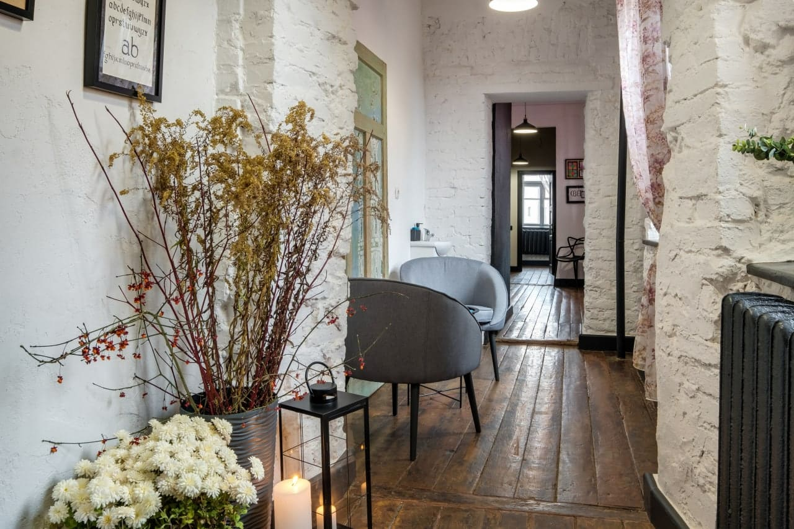
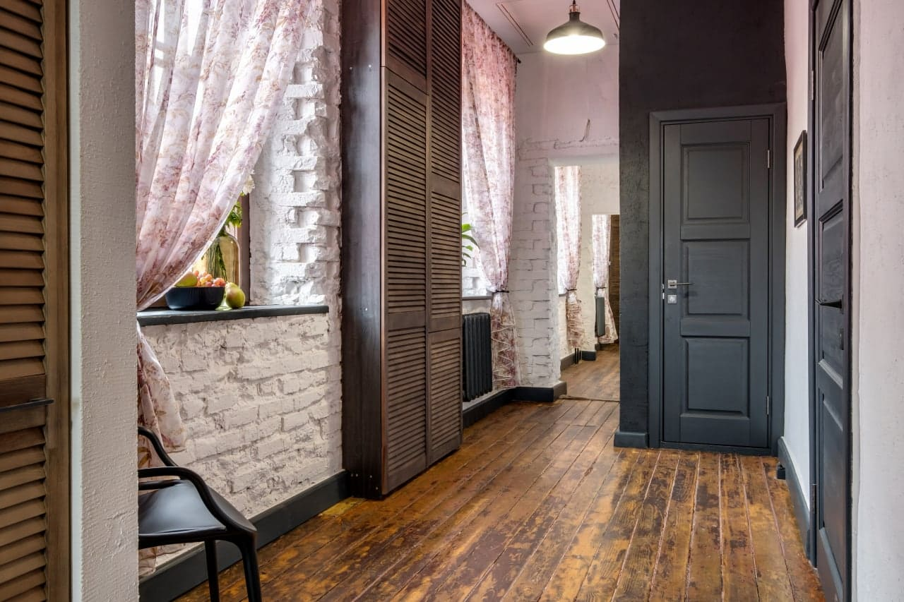

ПРАВИЛА ПРОЖИВАНИЯ И ОБСЛУЖИВАНИЯ В АРТ АПАРТ-ОТЕЛЕ «У ГРУШИ»
1. Общие положения
1.1. Правила проживания и обслуживания в Арт Апарт-Отеле «У Груши» (далее – Правила)
регулируют отношения между Исполнителем и Потребителем при осуществлении гостиничного
обслуживания, а также устанавливают правила проживания в гостинице и призваны
проинформировать Гостя и администрацию гостиницы об их взаимных правах и обязанностях.
1.2. Основные термины, используемые для целей настоящих Правил:
1.2.1. «Исполнитель» – Общество с ограниченной ответственностью «АЕК групп» (ООО «АЕК
групп»), являющееся юридическим лицом по законодательству Республики Беларусь
(юридический адрес – 230000, г. Гродно, ул. Урицкого, 26, пом. 5), осуществляющее гостиничное
обслуживание.
1.2.2. «Гостиница», «отель» – имущественный комплекс (здание или часть здания с
оборудованием и иным имуществом), отвечающий установленным требованиям технических
нормативных правовых актов, в котором осуществляется гостиничное обслуживание.
1.2.3. «Гостиничное обслуживание» – услуги, оказываемые Исполнителем по предоставлению
номеров (мест в номерах) для временного проживания физических лиц, а также
дополнительные услуги.
1.2.4. «Дополнительная кровать» – спальное место, представляющее собой кресло-кровать,
диван-кровать, кровать раскладывающуюся, и устанавливаемое в номерах дополнительно к
основному.
1.2.5. «Дополнительные услуги» (далее – услуги) – услуги питания, связи, бытовые, туристские и
другие услуги, оказываемые Исполнителем на возмездной и (или) безвозмездной основе в
соответствии с законодательством с привлечением сторонних организаций.
1.2.6. «Потребитель» – юридическое или физическое лицо, заказывающее и (или)
использующее услуги.
1.2.7. «Гость» – потребитель, являющийся физическим лицом, использующим услуги
Исполнителя.
1.2.8. «Документы, удостоверяющие личность»:
1.2.8.1. для граждан Республики Беларусь: – паспорт гражданина Республики Беларусь (при его
отсутствии – военный билет или прочие документы, перечисленные в п.1.2.8.2 – п.1.2.8.4.),
свидетельство о рождении для детей, не достигших шестнадцатилетнего возраста и не
имеющих паспорта; справка, подтверждающая личность гражданина, выдаваемая в случае
утраты гражданином документа, удостоверяющего личность;
1.2.8.2. для иностранных граждан и лиц без гражданства, постоянно проживающих на
территории Республики Беларусь: – вид на жительство в Республике Беларусь;
1.2.8.3. для иностранных граждан и лиц без гражданства, временно находящихся на территории
Республики Беларусь: – документ для выезда за границу (действительный паспорт или иной
документ, его заменяющий, предназначенный для выезда за границу и выданный
соответствующим органом государства гражданской принадлежности либо обычного места
жительства иностранца или международной организацией);
1.2.8.4. для беженцев на территории Республики Беларусь: – удостоверение беженца.
1.2.9. «Негарантированное бронирование» – не подтвержденное ни одним из способов,
указанных в п. 1.2.10. настоящих Правил, бронирование, срок действия которого заканчивается
в 14:00 дня, предшествующего дню заезда (если в договоре или подтвержденной заявке на
бронирование не указано другое время), после чего Отель вправе аннулировать бронирование
и выставить номер в открытую продажу.
1.2.10. «Гарантированное бронирование» – бронирование, осуществленное одним из способов,
указанных в. п. 2.1. настоящих Правил со 100% предоплатой сохраняет бронь на номер на весь
период проживания, указанный при бронировании.
1.2.11. «OTA» (online travel agency) – туристические агентства, реализующие свои услуги через
интернет.
1.2.12. «Основной тариф» – утвержденный максимальный тариф суточного проживания для
каждой категории номеров, мест в Отеле.
1.2.13. «Открытый/BAR тариф» – тариф, который рассчитывается на основании тарифа
«основной» с применением скидок, исходя из показателей загрузки, сезонности, конъюнктуры
рынка, и который доступен любому Гостю.
1.2.14. «Недостаток услуги» – несоответствие услуги нормативным документам,
устанавливающим требования к качеству услуги, иному законодательству или условиям
договора.
1.3. В целях информирования Гостей в помещении, предназначенном для оформления
проживания Гостей (холл гостиницы) на русском языке размещаются: информация о
наименовании, месте нахождения, номере телефона Исполнителя; Правила гостиничного
обслуживания в Республике Беларусь, утверждённые Постановлением Совета Министров
Республики Беларусь от 07.04.2006 г. № 471; настоящие Правила; перечень оказываемых услуг;
информация о форме и порядке оплаты оказываемых услуг; информация о хранении вещей
Потребителя; информация о туристском потенциале Республики Беларусь.
1.4. Настоящие Правила проживания и обслуживания в Арт Апарт-Отеле «У Груши» (выдержки),
Правила пожарной безопасности и информация об оказываемых услугах размещаются в
каждом номере Отеля и на официальном сайте.
1.5. Услуги, оказываемые на возмездной основе, предоставляются Исполнителем только с
согласия Гостя. Запрещается обусловливать выполнение одних услуг обязательным оказанием
других.
1.6. Курение в Отеле разрешено только в специально отведенных для этого местах.
1.7. Администрация Отеля оставляет за собой право применять меры реагирования в
соответствии с законодательством Республики Беларусь при нарушении Гостем норм
противопожарной безопасности, курении в неположенных местах и неподчинении законным
требованиям администрации.
1.8. По всем неоговоренным в настоящих правилах вопросам администрация Отеля
руководствуется действующим законодательством Республики Беларусь.
1.9. Книга замечаний и предложений находится в расположении Отеля (г. Гродно, ул. Урицкого,
26) и выдается Потребителю по первому требованию.
2. Бронирование номеров
2.1. Бронирование номеров в Отеле производится круглосуточно администратором при личном
визите Гостя или лиц, заказывающих для Гостя услуги Исполнителя, посредством телефонной
связи или обращения через мессенджеры, а также по предварительным заявкам (почтовая,
телефонная, электронная связь, Интернет-бронирование, бронирование через OTA).
2.2. Предельный срок, на который единовременно оформляется проживание в Отеле, не должен
превышать 30 суток.
2.3. Потребитель вправе заказать номер, подав заявку не ранее чем за 60 суток, но не позднее
двух часов до поселения, если иное не предусмотрено договором.
2.4. Для бронирования одного или двух номеров потребитель подает заявку посредством
почтовой, электронной связи, системы online бронирования с официального сайта
ugrushi-hotel.by, или сообщает о желании осуществить бронирование по телефону
(мессенджеру). Бронирование номеров Потребителем может осуществляться посредством
интернет-сервисов (система онлайн бронирования отелей Booking.com и др.) в порядке и на
условиях, указанных на них администрацией Отеля.
2.5. Для бронирования трех и более номеров потребитель подает заявку посредством почтовой,
электронной связи, системы online бронирования с официального сайта ugrushi-hotel.by.
Бронирование номеров Потребителем может осуществляться посредством интернет-сервисов
(система онлайн бронирования отелей Booking.com и др.) в порядке и на условиях, указанных
на них администрацией Отеля.
2.6. Плата за бронирование номера не взимается. Если иное не согласовано с администрацией
Отеля при бронировании номера, денежные средства, подлежащие перечислению в качестве
оплаты за проживание, должны поступить на счет Отеля в срок, предусмотренный п. 4.3., в
противном случае бронирование аннулируется.
2.7. Требования к заявкам на бронирование номеров в Отеле:
2.7.1. При осуществлении бронирования физическими лицами в заявке указывается следующая
информация о Гостях: фамилия, имя, отчество (при наличии); дата и время заезда и выезда из
Отеля; категория номера и количество номеров; количество проживающих в номере; контактный
телефон/факс и адрес электронной почты; другая дополнительная информация, важная для
качественного обслуживания Гостей.
2.7.2. Заявки от организаций, юридических лиц и индивидуальных предпринимателей
оформляются на фирменном бланке (при наличии) с указанием: точных реквизитов; фамилии,
имени и отчества (при наличии) Гостя; даты и времени заезда и выезда из отеля; категории
номера и количества номеров; количества проживающих в номере; номера и даты Договора с
Исполнителем (при наличии); плательщика и формы оплаты; другой дополнительной
информации, важной для качественного обслуживания Гостей.
2.8. Заявка на бронирование считается принятой после подтверждения ее лицом,
ответственным за бронирование, по телефону, по факсимильной, электронной связи, иным
способом. О результатах бронирования, предпочтительно, сообщается тем же способом, каким
была подана заявка. В подтверждение бронирования Отель предоставляет Потребителю счет
для оплаты проживания и/или регистрационный номер заявки.
2.9. Срок действия Негарантированного бронирования заканчивается в 14:00 дня,
предшествующего дню заезда, после чего Отель вправе аннулировать бронирование и
выставить номер в открытую продажу. Гарантированное бронирование сохраняет бронь на
номер на весь период проживания, указанный при бронировании.
2.10. Дополнительная кровать, при ее наличии и в случае возможности ее установки в номере,
может бронироваться заранее и оплачивается дополнительно в соответствии с действующими
тарифами.
2.11. В случае аннуляции заявки менее чем за 24 часа до заезда Гостя, а также в случае
незаезда Гостя, Исполнитель взыскивает с Гостя (Потребителя) компенсацию в размере 100%
стоимости первых суток проживания по тарифу для каждого из отмененных номеров и
аннулирует бронь. Для невозвратных тарифов бесплатная отмена брони невозможна.
2.12. При отмене бронирования возврат денежных средств производится в установленные сроки
на карту, с которой был произведен платеж. В случае возврата средств фактическое зачисление
денежных средств на счет банковской карты Гостя может занимать до 30 дней в зависимости от
правил и условий, межбанковских процессинговых центров и банков, участвующих в данной
операции.
2.13. Оплата произведенного бронирования Потребителем является подтверждением
заключения договора по предоставлению Отелем номеров для временного проживания на
условиях, предусмотренных настоящими Правилами.
3. Порядок оформления проживания в гостинице
3.1. Оформление Гостей, прибывающих в Гостиницу и выбывающих из нее, осуществляется
круглосуточно.
3.2. Предоставление услуг Потребителю (Гостю) осуществляется на основании публичного
договора, либо договора, заключенного в письменной форме.
3.3. Оформление проживания в гостинице осуществляется при предъявлении гражданином
документа, удостоверяющего личность, а в случае его отсутствия – одного из следующих
документов: - вид на жительство, удостоверение беженца, – справка, подтверждающая личность
гражданина, выдаваемая в случае утраты гражданином документа, удостоверяющего личность
(в соответствии с «Правилами гостиничного обслуживания в Республике Беларусь» в ред.
Постановления Совета Министров Республики Беларусь от 22.12.2018 №935, Указа Президента
Республики Беларусь от 03 июня 2008 г. №294), – свидетельства о рождении для детей в
возрасте до шестнадцати лет, – военный билет, – справка об обращении с ходатайством о
предоставлении статуса беженца, дополнительной защиты или убежища в Республике
Беларусь, – свидетельство о регистрации ходатайства о предоставлении статуса беженца,
дополнительной защиты или убежища в Республике Беларусь, – свидетельство о
предоставлении дополнительной защиты в Республике Беларусь. Иностранные граждане и лица
без гражданства оформляются в Отеле по предъявлении документа для выезда за границу при
наличии визы Республики Беларусь и миграционной карты, если иное не определено
законодательством Республики Беларусь и международными договорами Республики Беларусь.
3.4. Граждане, находящиеся в состоянии алкогольного опьянения или под воздействием
наркотических средств, не обслуживаются.
3.5. При оформлении проживания администратор Отеля выдает Гостю счет, чек (при
совершении оплаты) и ключ (электронный либо механический) от гостиничного номера в
подтверждение заключения договора на предоставление услуг. Счет содержит следующую
информацию: фамилию и имя гостя; № комнаты, в которой Гость будет проживать, срок
проживания в Отеле. Получение Гостем счета и ключа подтверждает заключение договора со
стороны гостя, а также то, что Гость ознакомлен с настоящими правилами, правилами
противопожарной безопасности и принимает все условия, указанные в них. Отель в
соответствии с действующим законодательством Республики Беларусь не позднее трех часов
после предоставления жилых помещений для проживания временно пребывающим в
Республике Беларусь иностранным гражданам и лицам без гражданства (далее – иностранцы)
представляют в орган внутренних дел по месту нахождения Отеля информацию о таких
иностранцах, в том числе их персональные данные, без письменного согласия таких
иностранцев. При необходимости Отель на основании требования Гостя, оформленного в
письменной форме не позднее 10 дней с момента окончания проживания, высылает Гостю по
адресу, указанном в требовании счет на бумажном носителе.
3.6. По истечении согласованного срока проживания Гость освобождает номер. Лица, желающие
продлить проживание в Отеле, должны сообщить об этом администратору Отеля не позже, чем
за двадцать четыре часа до окончания срока проживания. Продление проживания
осуществляется при наличии возможности.
3.7. При отсутствии возможности продлить срок проживания Гостя в том же номере или
предоставить другой номер, а также в случае истечения срока действия визы Республики
Беларусь, проживающие обязаны освободить занимаемый номер не позже расчетного часа.
3.8. Лица, поселяющиеся в Отель по брони, подтвержденной администрацией Отеля, имеют
приоритетное право поселения перед лицами, желающими продлить проживание по истечении
согласованного срока проживания.
3.9. Размещение в Отеле по предварительной заявке или по свободному поселению до
расчетного часа производится при наличии свободных и готовых к заселению номеров на
усмотрение администрации Отеля.
3.10. По просьбе Потребителя Отель вправе изменить условия заключенного договора и, при
наличии свободных номеров, переселить его в другой номер с доплатой (при необходимости).
3.11. Действие договора относительно срока проживания заканчивается в 12.00 дня выезда
Гостя из Отеля, кроме случаев позднего выезда, а в отношении оплаты – до окончательного
расчета за оказанные услуги. При выезде Гость должен уточнить у администратора состояние
своего лицевого счета и при наличии задолженности погасить ее, а также сдать ключ от номера.
3.12. Нарушение одной из сторон условий договора дает право другой стороне прекратить
действие договора, уведомив об этом сторону, нарушившую условия договора.
4. Режим поселения и порядок оплаты за проживание.
4.1. Единый расчетный час в Отеле установлен в 12 час. 00 мин. по местному времени.
4.2. Забронированные номера должны быть готовы к поселению Гостей не позднее, чем к 14.00
(если в заявке или договоре не было оговорено иное), а номера отъезжающих освобождены к
12.00 текущих суток по местному времени.
4.3. Оплата за проживание в Отеле взимается по действующему тарифу на условиях
предварительной оплаты: посуточно или в полном объеме за весь срок проживания.
Окончательный расчет за оказанные услуги производится по факту оказания услуг при выезде
гостя. Если иное не согласовано с администрацией Отеля при бронировании номеров,
денежные средства, подлежащие перечислению в качестве оплаты за проживание, должны
поступить на счет Исполнителя не позднее, чем за сутки до момента заезда.
4.4. При проживании в Отеле не более суток (не более 24 часов) плата за номер, место
взимается за полные сутки.
4.5. При вселении Гостя до расчетного часа (в период времени с 0.00 до 12.00) доплата за
ранний заезд взимается в размере половины суток.
4.6. В случае задержки Гостя в номере после расчетного часа (поздний выезд) на срок: - до 12
часов - производится доплата в размере 50% полной стоимости суточного проживания (за
половину суток), – от 12 до 24 часов – производится доплата за полные сутки.
4.7. Исполнитель предоставляет льготы при оказании услуг тeм категориям граждан, которым
такие льготы предусмотрены законодательством Республики Беларусь.
4.8. Гость обязан произвести окончательный расчет за оказанные ему услуги при выселении.
4.9. Плата за проживание и дополнительные услуги, предоставляемые в Отеле, осуществляется
в национальной валюте Республики Беларусь – белорусских рублях за наличный расчет, по
безналичному расчету, через Интернет Эквайринг или другими предусмотренными
законодательством Республики Беларусь способами.
4.9. Не взимается плата за проживание в Отеле детей в возрасте до 8 лет при условии их
размещения с родителями (опекунами) в одном номере без предоставления отдельного места в
номере. В случае необходимости предоставления отдельного спального места с комплектом
белья для ребенка данной возрастной категории взимается оплата в соответствии с
действующими в Отеле тарифами (за исключением случаев предоставления детской кроватки
для детей до 3 лет).
4.10. По просьбе проживающих в номерах (определенных администрацией) может
предоставляться до двух дополнительных мест с оплатой в соответствии с утвержденным
тарифом (с предоставлением дополнительного комплекта постельного белья).
4.11. При наличии в Отеле свободных мест Гость вправе занимать номер любой категории при
условии полной оплаты номера по тарифу для данной категории номера. Тариф на место
применяется согласно действующему прейскуранту в случае необходимости разделения оплаты
соответственно количеству проживающих гостей.
4.12. В случае задержки Гостя после расчетного часа на срок до 12 часов в номере:
4.12.1. забронированном по заявке компании, не имеющей с Исполнителем договорных
отношений, либо который Гость забронировал самостоятельно или в который он вселился без
предварительного бронирования производится доплата самим Гостем в размере 50% полной
стоимости суточного проживания по тарифу «Открытый/BAR», действующему на момент
оплаты.
4.12.2. забронированном и оплачиваемом по безналичному расчету по тарифу со скидкой
согласно условиям Договора с Исполнителем, при отсутствии заявки организации на продление
сроков проживания, доплата производится самим Гостем в размере 50% полной стоимости
суточного проживания по тарифу «Открытый/BAR», действующему на момент оплаты.
4.12.3. забронированном по тарифу со скидкой согласно условиям Договора с Исполнителем и
оплачиваемом в соответствии с заявкой Гостем самостоятельно, при наличии заявки
организации на продление сроков проживания, производится доплата самим Гостем в размере
50% полной стоимости суточного проживания по тарифу со скидкой согласно условиям
Договора на оказание гостиничных услуг.
4.12.4. забронированном по тарифу со скидкой согласно условиям Договора с Исполнителем и
оплачиваемом в соответствии с заявкой Гостем при отсутствии заявки на продление сроков
проживания, производится доплата самим Гостем в размере 50% полной стоимости суточного
проживания по тарифу «Открытый/BAR», действующему на момент оплаты.
4.13. В случае досрочного расторжения договора, по которому была произведена
предварительная оплата услуг, Отель производит в установленном порядке возврат денежных
средств Потребителю, который оплатил данную услугу, в размере стоимости невостребованных
услуг. В случае выезда Гостя менее чем за 24 часа до окончания оплаченного срока
проживания, возврат денежных сумм не осуществляется.
4.14. При изменении Гостем категории номера, забронированного и оплачиваемого по тарифу со
скидкой согласно условиям Договора с Исполнителем, в сторону ее повышения (при отсутствии
заявки компании на изменение категории номера), доплата производится самим Гостем в
размере разницы между тарифом со скидкой согласно условиям Договора на оказание
гостиничных услуг и «Открытым/BAR» тарифом на номер категории в сторону повышения.
4.15. В Отеле могут действовать специальные тарифы (скидки), устанавливаемые локальными
нормативными правовыми актами.
5. Порядок проживания в гостинице
5.1. Гостю, поселяемому в Отель, выдается документ, подтверждающий проживание в Отеле –
счет и (или) фискальный чек (после совершения оплаты) и ключ (электронный или
механический) от гостиничного номера. Вход в номерной фонд Отеля осуществляется
посредством ключа. Администратор имеет право требовать у лиц, осуществляющих вход в
Отель, предъявить документ, удостоверяющий личность.
5.2. Ключ от номера проживающему в Отеле выдается администратором при поселении или по
запросу Гостя. Передача ключа от номера другому лицу, не проживающему в данном номере (не
указанному при бронировании), не допускается.
5.3. При выезде из Отеля постоялец обязан оповестить об этом администратора Отеля, сдать
ему номер и ключ, а также произвести окончательный расчет за оказанные услуги.
5.4. Постояльцам и приглашенным лицам надлежит соблюдать Правила проживания в Отеле,
правила пожарной безопасности, чистоту и порядок, бережно относиться к имуществу,
оборудованию Отеля.
5.5. Проживающие в Отеле обязаны:
5.6.1. соблюдать настоящие Правила, Правила пожарной безопасности и Санитарные нормы;
5.6.2. бережно относиться к имуществу и оборудованию Отеля, соблюдать чистоту и порядок. В
случае повреждения или утраты имущества и/или оборудования Отеля, Гость (проживающий)
возмещает стоимость нанесенного ущерба в действующих на момент проживания ценах
согласно прейскуранту;
5.6.3. не шуметь и не совершать действий, нарушающих условия проживания других Гостей;
5.6.5. своевременно и в полном объеме оплачивать все представленные Отелем услуги, в том
числе дополнительные., в том числе продукцию мини-бара.
5.6.6. по истечении установленного срока проживания освободить номер (место в номере);
5.6.7. при выселении из Отеля произвести окончательный расчет за оказанные услуги и сдать
администратору или горничной занимаемый номер (место в номере), а администратору Отеля –
ключ от номера.
5.7. Проживающим в Отеле запрещается:
5.7.1. пользоваться открытым огнем, электронагревательными приборами;
5.7.2. распивать спиртные напитки в номере, если возражают другие совместно проживающие в
номере Гости;
5.7.3. курить самим и разрешать курить приглашенным лицам в номерах Отеля, а также в
местах, не предусмотренных для курения (информацию о расположении мест, специально
предназначенных для курения в Отеле, проживающие могут получить у администратора Отеля).
При обнаружении признаков курения в номере с Гостя взыскивается плата за дезодорацию
номера в действующих на момент проживания ценах согласно прейскуранту;
5.7.4. включать звуковоспроизводящую аппаратуру с громкостью, превосходящей слышимость в
пределах номера;
5.7.5. хранить в номере громоздкие вещи, оружие, наркотики, отравляющие,
легковоспламеняющиеся и взрывчатые вещества и материалы и т.п.;
5.7.6. держать в номере насекомых, животных, птиц и других представителей фауны;
5.7.7. оставлять в номере в свое отсутствие приглашенных лиц, а также передавать им Ключ от
номера.
5.7.8. выбрасывать через окна номера мусор (бутылки, окурки и т.п.).
5.8. В целях личной безопасности и сохранности имущества проживающим
следует ознакомиться со схематическим планом индивидуальной эвакуации с соответствующего
этажа, с памяткой о требованиях пожарной безопасности и действиями на случай
возникновения пожара.
5.9. Посторонние лица (не оформленные в Отеле в установленном порядке) могут находиться в
номере с 7.00 до 23.00 часов по приглашению проживающего в нем Гостя при условии
уведомления администратора. Проживающие в Отеле несут ответственность за своевременный
уход приглашенных и соблюдение ими Правил проживания в Отеле. При нахождении
приглашенного в номере после 23.00 часов должно быть оформлено его проживание в Отеле в
установленном настоящими Правилами порядке с оплатой согласно действующему тарифу. В
противном случае сотрудники отеля имеют право принять меры по выпровождению
приглашенного.
5.10. В случае временного выезда из Отеля, Гость обязан сообщить об этом администратору и
внести предоплату за период отсутствия (если она им не была внесена ранее), в противном
случае он теряет право на проживание и подлежит выселению, а также обязан оплатить
Исполнителю фактически оказанные им услуги до момента выселения.
5.11. В случае, если Гость выезжает из Отеля, не предупредив администратора Отеля, но
оставляет вещи в номере, то номер считается занятым им до конца оплаченного срока
проживания. По истечении указанного срока оставшиеся в номере вещи в установленном
порядке актируются и сдаются в камеру хранения как забытые.
5.12. Администрация Отеля оставляет за собой право посещения номера без согласования его с
Гостем в случае задымления, пожара, затопления, а также в случае нарушения Гостем
настоящих Правил, общественного порядка, порядка пользования бытовыми приборами, а
также при подозрении на его плохое самочувствие.
5.13. Отель вправе расторгнуть договор на оказание гостиничных услуг и выселить
проживающего в Отеле до момента окончания согласованного срока проживания в
одностороннем порядке либо отказать в продлении срока проживания в случае нарушения
гостем настоящих правил, порядка проживания, несвоевременной оплаты услуг Отеля,
причинения гостем материального ущерба Отелю.
5.14. Возникающий шум при проведении ремонтных работ в Отеле либо за его пределами, а
также шум мероприятий на прилегающей к Отелю территории не является нарушением
договора на оказание гостиничных услуг.
5.15. Отель не несет ответственность за работу городских служб и организаций (аварийное
отключение электрической и тепловой энергии, водоснабжения, происходящие строительные
работы, а также ограничение передвижения, сопряженное с повышенными мерами
безопасности на прилегающей территории во время проведения городских и республиканских
мероприятий).
6. Обслуживание гостей
6.1. Администрация Отеля предоставляет Гостям по их просьбе дополнительные платные
услуги согласно перечню, утвержденному в Отеле.
6.2. Проживающим в Отеле предоставляются следующие бесплатные услуги:
6.2.1. доставка в номер поступающей на имя Гостя корреспонденции при ее получении;
6.2.2. вызов, в случае необходимости скорой помощи;
6.2.3. доступ к высокоскоростному интернету;
6.2.4. заказ авиа и ж/д билетов;
6.3. Порядок уборки номеров горничными, периодичность смены постельного белья и
полотенец, комплектация ванных комнат косметическими и банными принадлежностями
регламентируются действующими стандартами, санитарными нормами и правилами Республики
Беларусь.
6.4. Администраторы и другие работники Отеля предоставляют Гостям необходимую
справочную информацию о режиме работы служб Отеля, оказывают содействие в вызове такси
и организации трансфера, экскурсий, в бронировании билетов, организации услуг химчистки и
прачечной (сторонними организациями).
6.5. Проживающим в Отеле гарантируется сохранность их личных вещей, находящихся в
номере, за исключением денег, иных валютных ценностей, ценных бумаг и прочих
драгоценностей, при условии соблюдения настоящих Правил.
6.6. Гость, обнаруживший утрату, недостачу или повреждение своих вещей, обязан без
промедления заявить об этом администратору Отеля. В противном случае Исполнитель (Отель)
освобождается от ответственности за не сохранность вещей.
6.7. В случае обнаружения забытых вещей администрация Отеля принимает меры по возврату
их владельцу. Если владелец не установлен, забытые вещи реализуются в установленном
порядке, либо уничтожаются по истечении 6 (шести) месяцев с момента их обнаружения
6.8. Исполнитель освобождается от ответственности за утрату, недостачу или повреждение
вещей проживающего (Гостя), если они произошли по вине проживающего (Гостя).
6.9. В целях обеспечения безопасности в Отеле, контроля качества оказания услуг в холлах и
коридорах гостиницы ведется видеонаблюдение и аудиозапись.
7. Прочие права и обязанности сторон. Ответственность сторон.
7.1. Гость принимает на себя обязательства по оплате оказываемых Отелем услуг и несет
ответственность за соблюдение настоящих Правил.
7.2. Серьезное или повторяющееся нарушение Гостем Правил дает Исполнителю право
прекратить действие договора, предварительно уведомив об этом Гостя не менее чем за 30
(тридцать) минут. В данном случае при выселении Гость обязан оплатить фактически оказанные
ему услуги.
7.3. Гость несет имущественную ответственность за любой ущерб, нанесенный им на
территории Отеля другим лицам и/или их имуществу, а также имуществу, зданию, отделке или
оборудованию Исполнителя.
7.4. Гость несет в установленном порядке ответственность за:
нарушение Правил проживания в гостинице, правил пожарной безопасности, санитарных норм.
неоплату (несвоевременную) оплату услуг;
повреждение и утрату имущества гостиницы, причиной которых является небрежное
пользование, и возмещает стоимость нанесенного ущерба в рыночных ценах, действующих на
момент проживания, в порядке, предусмотренном администрацией отеля и (или) согласно
утвержденного отелем прейскуранта цен;
утерю ключа от номера, и обязан оплатить штраф в размере до 10 (десяти) базовых величин.
7.5. При обнаружении «Недостатка услуги» Гость вправе по своему выбору потребовать: –
безвозмездного устранения недостатков; – равноценной замены услуг; – соразмерного
уменьшения платы за услуги.
7.6. Исполнитель должен устранить недостатки услуг при предъявлении Гостем
соответствующего требования.
7.7. В случае, если Исполнитель не устранил по требованию Гостя недостатки услуг, Гость
вправе расторгнуть договор, оплатив фактически оказанные ему услуги. В случае досрочного
расторжения договора и предварительной оплаты услуг Исполнитель обязан возвратить Гостю
денежные средства в размере стоимости невостребованных услуг в установленном
Исполнителем порядке.
7.8. Исполнитель несет ответственность за вред, причиненный жизни или здоровью Гостя
вследствие недостатков при оказании Исполнителем гостиничных услуг, в соответствии с
законодательством Республики Беларусь.
7.9. За качество и своевременность предоставления услуг Партнёрами гостиницы
ответственность несут Партнёры гостиницы.
7.10. В случае нарушения Исполнителем настоящих Правил, защита прав потребителей
осуществляется в порядке, установленном Законом Республики Беларусь «О защите прав
потребителей» (в действующей редакции).
7.11. В остальном, что не предусмотрено настоящими Правилами, Исполнитель и Потребитель
руководствуются действующим законодательством Республики Беларусь.
7.12. Если в установленном порядке на территории Республики Беларусь введены в действие
нормативные акты, устанавливающие иные правила гостиничного обслуживания и проживания в
гостиницах, то настоящие Правила действуют в части, не противоречащей этим нормативным
актам.
7.13. Настоящие Правила действуют до принятия новых Правил.
7.14. В случае возникновения жалоб со стороны гостя, администрация принимает возможные
меры для урегулирования конфликта, предусмотренные законодательством.
7.15. Настоящие Правила разработаны на основании:
Правил гостиничного обслуживания в Республике Беларусь, утвержденных Постановлением
Совета Министров Республики Беларусь от 07.04.2006 № 471 (с последующими изменениями и
дополнениями);
Правил проживания в гостинцах Республики Беларусь, утвержденных Постановлением
Министерства Жилищно-коммунального хозяйства Республики Беларусь от 17.05.2006 №23 (с
последующими изменениями и дополнениями);
Закона Республики Беларусь «О правовом положении иностранных граждан и лиц без
гражданства в Республике Беларусь» от 04.01.2010 № 105-З (с последующими изменениями и
дополнениями);
Закона Республики Беларусь от 09.01.2002 №90-З «О защите прав потребителей»;
Закона Республики Беларусь от 25.11.1999 г. №326-З «О туризме»;
прочих нормативных правовых актов, регламентирующих правила, порядок и сроки проживания
в гостиницах Республики Беларусь;
Международных гостиничных правил (одобрены Советом Международной гостиничной
Ассоциации 02.11.1981 г.);
Глобального этического кодекса туризма (принят резолюцией Генеральной Ассамблеи ООН
21.12.2001г.);
Указа Президента Республики Беларусь от 03 июня 2008 №294.
Публичный договор на оказание гостиничных услуг
Общество с ограниченной ответственностью «АЕК групп», именуемое в дальнейшем
«Исполнитель», в лице директора Прокопович Елены Станиславовны, действующей на
основании Устава, с одной стороны, заключает настоящий Договор с любым лицом, именуемым
в дальнейшем «Заказчик». Договор является соглашением о предоставлении услуг на
возмездной основе, заключаемым путем публичной оферты, и регламентирует порядок
предоставления гостиничных услуг и обязательств, возникающих в связи с этим, между
«Исполнителем» и «Заказчиком» в дальнейшем именуемые как «Стороны». Стороны
руководствуются законодательством Республики Беларусь и настоящим договором. Текст
настоящего Договора размещен на сайте ugrushi-hotel.by, а также в холле отеля. В соответствии
с пунктом 2 статьи 407 Гражданского кодекса Республики Беларусь (далее – ГК РБ) данный
документ, размещенный в сети Интернет по адресу ugrushi-hotel.by, в холле отеля, является
публичной офертой, и в случае совершения Заказчиком действий, свидетельствующих о ее
акцепте, является обязательным к исполнению для Исполнителя и Заказчика. В соответствии с
пунктом 3 статьи 408 ГК РБ, оплата Заказчиком услуг Исполнителя является полным и
безоговорочным акцептом оферты, что считается равносильным заключению договора на
условиях, изложенных в оферте. Оплачивая услуги, Заказчик подтверждает, что ознакомлен с
Правилами гостиничного обслуживания и проживания в Арт Апарт-Отеле «У Груши»,
размещенными на сайте, в холле отеля, и обязуется их выполнять.
1. Предмет договора и порядок его заключения
1.1. Настоящий договор определяет взаимоотношения между Исполнителем и Заказчиком, их
права и обязанности, ответственность, связанные с размещением и обслуживанием Заказчика
(его гостей).
1.2. По настоящему договору Исполнитель обязуется оказать Заказчику услуги по временному
проживанию в гостиничных номерах и иные дополнительные услуги, в соответствии с
прейскурантами цен (прейскуранты размещены в холле отеля и на сайте ugrushi.by), а
Заказчик - обязуется принять и оплатить оказанные Услуги в порядке и на условиях,
определенных настоящим договором.
1.3. Настоящий договор является публичным договором (ст.396 Гражданского Кодекса
Республики Беларусь), в соответствии с которым Исполнитель принимает на себя обязательство
по оказанию услуг в отношении неопределенного круга лиц (Заказчиков), обратившихся за
указанными услугами.
1.4. Заключение настоящего договора производится путем присоединения Заказчика к
настоящему договору, т.е. посредством принятия (акцепта) Заказчиком условий настоящего
договора в целом, без каких-либо условий, изъятий и оговорок (ст.398 Гражданского Кодекса
Республики Беларусь).
1.5. Фактом принятия (акцепта) Заказчиком условий настоящего договора является оплата
Заказчиком заказанных им услуг в порядке и на условиях, определенных настоящим договором
(п.3 ст.408 Гражданского кодекса Республики Беларусь).
1.6. Настоящий договор, при условии соблюдения порядка его акцепта, считается заключенным
в простой письменной форме (п.2, п.3 ст.404 и п.3 ст.408 Гражданского кодекса Республики
Беларусь).
1.7. Место оказания услуг: Республика Беларусь, г. Гродно, ул. Урицкого, 26
1.8. Исполнитель предоставляет услуги в соответствии с Правилами гостиничного обслуживания
и проживания в отеле, размещенными на сайте.
2. Термины, используемые в настоящем договоре и их определения
2.1. Отель – Арт Апарт-Отель «У Груши».
2.2. Исполнитель – юридическое лицо, осуществляющее гостиничное обслуживание.
2.3. Заказчик – юридическое или физическое лицо, заказывающее и (или) использующее услуги.
2.4. Гостиничные услуги – услуги, оказываемые Исполнителем по предоставлению номеров для
временного проживания физических лиц (гостей), а также дополнительные услуги.
2.5. Дополнительные услуги — услуги общественного питания, связи, туристские и другие
услуги, оказываемые Исполнителем на возмездной и (или) безвозмездной основе в
соответствии с законодательством.
2.6. Расчетный час – время, в которое гость должен освободить номер (если он не продлевает
период проживания) и оплатить проживание. В отеле расчетный час установлен в 12 час. 00
мин. по местному времени.
2.7. «Full rate» – максимальные официально опубликованные цены услуг Исполнителя на
размещение.
2.8. Заявка (лист бронирования) – документ, на основании которого производится бронирование
номеров в отеле, заказ иных услуг, предоставляемых Исполнителем и в котором отражены
конкретные условия проживания гостя.
2.9. Группа гостей – группа физических лиц от 5 (пяти) человек.
3. Обязанности и права сторон
3.1. Исполнитель обязан:
3.1.1. Разместить Заказчика (его гостей) в гостиничных номерах в соответствии с п.1.1., 1.2.
настоящего договора.
3.1.2.В течение действия настоящего договора оказывать Заказчику Услуги собственными
силами, средствами или с привлечением третьих лиц.
3.1.3.В случае невозможности размещения гостей согласно подтвержденной Заявке на
бронирование, размещать их в альтернативные номера, а при отсутствии таких - в другие
свободные номера классом выше по стоимости заказанных и подтвержденных Исполнителем
номеров без взимания дополнительной оплаты.
3.1.4. Предоставлять Заказчику информационно-справочные материалы, способствующие
формированию у Заказчика полного представления о гостиничных услугах, предлагаемых
Исполнителем.
3.1.5. Давать объективную информацию о свойствах оказываемых Услуг, оказывать Услуги
качественно и в соответствии с порядком предоставления гостиничных Услуг.
3.1.6. Передавать Заказчику все необходимые оформленные документы, связанные с
размещением и проживанием в отеле, предоставлением иных возмездных Услуг.
3.1.7. Предоставлять информацию о стоимости предоставляемых гостиничных и
дополнительных Услуг в соответствии с прейскурантом отеля.
3.1.8. Предоставлять, при наличии такой возможности, дополнительные услуги Заказчику на
платной основе.
3.1.9. Устранять недостатки, возникшие при оказании Услуг по договору и в сроки,
согласованные Сторонами.
3.2. Исполнитель имеет право:
3.2.1. Потребовать предоставить Заказчика документы, подтверждающие достоверность
предоставления личных данных при размещении и заполнении регистрационной карты.
3.2.2. Требовать от Заказчика полного согласия с условиями настоящего договора, Правилами
проживания в отеле при оформлении размещения. Без согласия с условиями настоящего
договора и Правилами размещения, отказать Заказчику в предоставлении услуг.
3.2.3.В одностороннем порядке изменять стоимость своих услуг без внесения изменений в
Договор в соответствии с утверждением нового Прейскуранта, изменением учетной политики
Исполнителя, изменением законодательства Республики Беларусь, исходя из экономической
ситуации, а также в случае изменений ставок налогов, сборов, обязательных платежей,
эксплуатационных расходов и др. Уведомление об изменении тарифов на услуги Отеля
производится не позднее чем за 1 (один) календарный день до даты их вступления в силу.
Уведомление Заказчика производится путем размещения Исполнителем нового прейскуранта на
сайте Отеля в сети Интернет.
3.2.4. При наличии задолженности у Заказчика перед Исполнителем за оказанные гостиничные
услуги – в одностороннем порядке, предварительно уведомив Заказчика, приостановить его
размещение в забронированных гостиничных номерах до погашения своей задолженности в
согласованных с Исполнителем размерах, не неся никакой имущественной или финансовой
ответственности перед Заказчиком, либо разместить Заказчика после полной оплаты им
стоимости гостиничных номеров по тарифу «Full rate».
3.2.5. Досрочно расторгнуть договор в случаях: - нарушения Заказчиком Правил проживания и
обслуживания в Отеле; – при нарушении условий оплаты заявленных услуг; – при отказе от
согласия с условиями настоящего договора и Правил проживания;
3.2.6. Удерживать с Заказчика или требовать оплаты полной стоимости оказанных услуг или
причиненного Заказчиком ущерба, при этом Заказчик признает действия Исполнителя
полностью правомерными и не имеет претензий.
3.2.7. При заезде Заказчика без предварительного бронирования Исполнитель оставляет за
собой право отказать Заказчику в оказании гостиничных услуг либо предоставить их после
оплаты по тарифу «Full rate» (при наличии свободных номеров).
3.2.8. При отсутствии Заказчика по месту проживания более суток (или по истечении 6 часов с
момента наступления его расчетного часа), администрация отеля вправе создать комиссию и
выселить Заказчика при этом сделать опись имущества, находящегося в номере.
3.3. Заказчик обязан:
3.3.1. До оплаты услуг ознакомиться с Правилами проживания, порядком предоставления услуг,
с настоящим договором, нормами пожарной безопасности, иными внутренними
регламентирующими документами, связанными с оказанием заявленных услуг.
3.3.2. Предоставить службе размещения личные данные, необходимые для заселения,
заполнить анкету. Направлять Заявки на оказание гостиничных услуг в соответствии с п.п. 4.1 и
4.2 настоящего договора.
3.3.3. Оплатить оказанные услуги Исполнителя в размере, сроки и порядке, установленные
настоящим договором. Плата за проживание взимается в соответствии с единым расчетным
часом до 12 часов текущих суток. При проживании в отеле не более суток или сутки (в том числе
первые сутки) плата за номер взимается за сутки.
3.3.4. Предоставлять Исполнителю сведения об изменении численности гостей, количества
номеров и сроков проживания, а также заявлять об отказе от забронированных номеров и
других гостиничных услуг полностью или частично не позднее, чем за 7 (семь) суток до заезда
группы гостей и не позднее, чем за 24 (двадцать четыре) часа до заезда гостей (до 4 (четырех)
человек включительно). Время заезда в отеле установлено в 14 час. 00 мин. по местному
времени.
3.3.5. Соблюдать Правила гостиничного обслуживания и проживания в Отеле и требования
пожарной безопасности.
3.3.6. Обеспечить беспрепятственный доступ Исполнителя к месту оказания Услуг.
3.3.7. Своевременно сдать гостиничный номер, оплатить имеющуюся задолженность на дату
выезда, при необходимости оплатить ущерб, вызванный некомплектностью (пропажей
имущества) или порчей имущества.
3.3.8. Согласиться с условиями настоящей оферты и внутренними регламентирующими
документами Исполнителя, определяющих порядок проживания.
3.4. Заказчик имеет право:
3.4.1. Знакомиться с документами, подтверждающими факт оказания услуг Исполнителем.
3.4.2. Получать подтверждение бронирования в течение 5 (пяти) часов с момента получения
Заявки Исполнителем.
3.4.3. Контролировать качество оказываемых гостиничных услуг Исполнителем, а в случае
необходимости вносить свои предложения по его улучшению.
3.4.4. Заказчик имеет право в любой момент отказаться от Услуг проживания в отеле
(бронирования места), при этом обязан произвести все необходимые расчеты с Исполнителем.
3.4.5. В случае аннулирования заявки на бронирование не позднее, чем за 7 (семь) суток до
заезда группы гостей и не позднее, чем за 24 (двадцать четыре) часов до заезда гостей (до 4
(четырех) человек включительно), денежные суммы, поступившие на расчетный счет
Исполнителя в качестве предварительной оплаты за проживание, возвращаются Заказчику в
течение 30 (тридцати) банковских дней с момента аннулирования.
3.4.6. В случае аннулирования (полного или частичного) заявки на бронирование менее чем за 2
(двое) суток до заезда Заказчика, а также в случае не заезда в отель (при наличии не
аннулированной заявки) Заказчик выплачивает суточную стоимость каждого забронированного
номера (простой).
3.4.7. При досрочном выезде Заказчика из номера, возврат денежных сумм производится
посуточно при условии поступления письменной заявки, отправленной электронными
средствами связи с предоставлением копий чека и документа, удостоверяющего личность. В
случае отсутствия у Заказчика вышеуказанных документов, а также при выезде Заказчика менее
чем за 24 часа до окончания оплаченного срока проживания, возврат денежных сумм не
осуществляется.
3.5. Заказчик принимает к сведению и не возражает против факта использования в помещениях
Отеля (за исключением личных номеров постояльцев и туалетных кабин) систем
видеонаблюдения.
4. Условия бронирования и подтверждения гостиничных услуг
4.1. Основанием для бронирования гостиничных услуг (далее – бронирование) является Заявка
Заказчика. Бронирование номера осуществляется путем принятия от Заказчика заявки на
бронирование с помощью почтовой, телефонной, электронной и факсимильной связи, а также
при непосредственном обращении к администратору отеля. Заявка должна содержать
следующую информацию: фамилии и имена гостей; страна проживания; предполагаемые даты
и время заезда и выезда гостей; категория номера; количество человек в номере; плательщик;
форма оплаты; номер Договора и дата его заключения; другая дополнительная информация,
необходимая для качественного обслуживания гостей.
4.2.Бронирование производится по телефону +375 44 7765490 (Viber, WhatsApp, Telegram) или
электронной почте ugrushi.hotel@gmail.com, через сайт отеля ugrushi-hotel.by, систему
бронирования с указанием лиц, ответственных за бронирование, и их контактных данных.
4.3. Исполнитель направляет Заказчику письменное подтверждение о возможности оказания
гостиничных услуг либо информирует Заказчика об отсутствии такой возможности в течение 5
(пяти) часов с момента получения Заявки от Заказчика любым из вышеперечисленных
способов. При этом, подтвержденным бронированием считается письменное подтверждение
бронирования с указанием категории номера, цены, др. гостиничных услуг, которые будут
оказываться Исполнителем по данной Заявке.
4.4. Бронирование гостиничных номеров для гостей по категориям номеров производится при
наличии номеров запрашиваемой категории.
4.5. Аннуляция и изменение подтвержденного бронирования принимаются только в письменном
виде по факсу, на e-mail. Принятие аннуляции должно быть обязательно подтверждено
Исполнителем.
4.6. Если намеченные Заказчиком сроки размещения в Отеле или количество забронированных
мест изменяются, а также в случае аннуляции бронирования, Заказчик обязан сообщить об этом
не позднее, чем за 7 (семь) суток до заезда группы гостей и не позднее, чем за 24 (двадцать
четыре) часа до заезда гостей (до 4 (четырех) человек включительно).
4.7. Нарушение срока аннуляции/изменения бронирования, указанного в пункте 4.6. настоящего
раздела, а также неприбытия гостей в Отель в течение 12 часов с 14 час. 00 мин. ожидаемой
даты заезда, влечет за собой выплату Заказчиком в пользу Исполнителя компенсации в размере
100% стоимости одних суток проживания по тарифу каждого из отмененных/измененных
номеров. Сумму компенсации Исполнитель вправе удержать из суммы, перечисленной по
Договору в качестве предоплаты. В случае бронирования номеров на период рождественских и
новогодних праздников, майских праздников или иной период, указанный на сайте, и
последующей аннуляции бронирования, денежные средства, внесенные в качестве предоплаты,
возврату не подлежат.
4.8. Если Заказчик сокращает свое проживание в отеле и информирует об этом сотрудников
службы размещения не менее чем за 24 часа до наступления расчетного часа новой даты
выезда, Отель производит в установленном порядке возврат денежных средств Потребителю,
который оплатил данную услугу, в размере стоимости невостребованных услуг. В случае выезда
Заказчика менее чем за 24 часа до окончания оплаченного срока проживания, возврат
денежных сумм не осуществляется.
5. Условия оказания гостиничных услуг
5.1. Гостиничные услуги оказываются согласно подтвержденной заявке на бронирование в
соответствии с ценами, указанными Исполнителем. При непоступлении денежных средств до
14:00 дня, предшествующего дню заезда (если в договоре или подтвержденной заявке на
бронирование не указано другое время), Исполнитель вправе аннулировать бронирование и
выставить номер в открытую продажу.
5.2. При заезде гостей Заказчика без предварительного бронирования Исполнитель оставляет
за собой право отказать гостям в оказании гостиничных услуг либо предоставить их после
оплаты по тарифу «Full rate» при наличии свободных номеров.
5.3. Продление срока пребывания гостя в Отеле производится при наличии возможности.
Оплата за продление проживания, не подтвержденное заявкой Заказчика, производится самим
гостем по тарифу «Full rate».
5.4. Предоставление услуг в рамках настоящего договора подтверждается фактом проживания,
счетом, предоставленным посредством электронных средств связи и отсутствием
предъявленных Заказчиком письменных претензий по оказанным Исполнителем Услугам. При
необходимости Исполнитель на основании требования Заказчика, оформленного в письменной
форме не позднее 10дней с момента окончания проживания, высылает Заказчику по адресу,
указанном в требовании, счет на бумажном носителе.
5.5. Установить, что первичный учетный документ, подтверждающий совершение хозяйственной
операции, может быть составлен участником хозяйственной операции единолично.
5.6. Не взимается плата за проживание в Отеле детей в возрасте до 8 лет при условии их
размещения с родителями (опекунами) в одном номере без предоставления отдельного места в
номере. В случае необходимости предоставления отдельного спального места с комплектом
белья для ребенка данной возрастной категории взимается оплата в соответствии с
действующими в Отеле тарифами (за исключением случаев предоставления детской кроватки
для детей до 3 лет). При этом плата за другие услуги Отеля взимается в полном объеме.
6. Порядок, условия и форма расчетов
6.1. Стоимость услуг, оказываемых в рамках настоящего договора, определяется исходя из
объема, характера и продолжительности заказанных Заказчиком услуг, согласно утвержденным
Исполнителем прейскурантом цен, действующим непосредственно в момент выставления
требования об оплате заказанных Услуг.
6.2. Оплата услуг производится по безналичному расчету – кредитными картами (VISA, VISA
ELECTRON, MASTER CARD, EUROCARD, CIRRUS/MAESTRO) или наличными белорусскими
рублями в кассу исполнителя, а также через интернет Эквайринг или непосредственно в отеле
кредитными картами (VISA, VISA ELECTRON, MASTER CARD, EUROCARD, CIRRUS/MAESTRO)
или банковским переводом на основании выставленного счета.
6.3. Плата за проживание в Отеле взимается Исполнителем в полном объеме на основании
100% предварительной оплаты. Стороны пришли к соглашению, что сумма предварительной
оплаты не является коммерческим займом и проценты на нее не начисляются.
6.4. Стоимость услуг, определяемая Исполнителем и оплачиваемая Заказчиком (гостем) не
является твердой. Окончательный объем и стоимость оказываемых услуг определяется
Исполнителем за фактически оказанные услуги Заказчику:
на проживание – по установленным у Исполнителя ценам, действующим на день оказания
услуги по проживанию (посуточно);
на дополнительные услуги – по установленным у Исполнителя ценам, действующим на день
оказания услуг. Валюта платежа – белорусские рубли.
6.5. Окончательный расчет за проживание и оказанные услуги производится Заказчиком до
12.00. часов в день выезда по счету (фолио) наличными денежными средствами или
кредитными (пластиковыми) картами (VISA, VISA ELECTRON, MASTER CARD,
CIRRUS/MAESTRO) в кассу исполнителя, интернет Эквайринг.
6.6. Расходы по услугам банка за перевод денежных средств несет сторона, осуществляющая
платеж.
6.7. Заказчику по усмотрению Исполнителя (в одностороннем порядке) может устанавливаться
скидка на проживание. Скидки на проживание, установленные для Заказчика и указанные
Исполнителем, не подлежат разглашению.
6.8. Днем оплаты считается день зачисления денежных средств на расчетный счет
Исполнителя.
7. Ответственность сторон
7.1. Стороны несут ответственность за неисполнение, ненадлежащее и (или) несвоевременное
исполнение своих обязательств по настоящему Договору в соответствии с условиями
последнего, Правилами гостиничного обслуживания и проживания в отеле, а в части, не
урегулированной договором и Правилами, в соответствии с законодательством Республики
Беларусь.
7.2. Заказчик несет ответственность:
7.2.1. за необоснованное уклонение от окончательного расчета и оплаты полученных услуг –
пеня в размере 3% от неоплаченной суммы за каждый календарный день просрочки;
7.2.2. за разглашение сведений, являющихся конфиденциальными, в том числе и размер
скидки, – штраф в размере от 10 до 100 базовых величин (на момент уплаты штрафа).
7.2.3. Стороны устанавливают договорной размер процентов за пользование чужими
денежными средствами на основании части второй п.1 ст.366 Гражданского кодекса Республики
Беларусь в размере 1% от суммы задолженности за каждый календарный день просрочки.
7.3. Исполнитель несет ответственность за необоснованный отказ от оказания услуг по заявке,
подтвержденной в соответствии с настоящим договором, - штраф в размере 0,01% от суммы
аванса, поступившего на расчетный счет Исполнителя за данную услугу.
7.4. Стороны освобождаются от ответственности за частичное или полное неисполнение
обязательств по настоящему Договору, если оно явилось следствием обстоятельств
непреодолимой силы: войн, пожаров, наводнений, землетрясений, эпидемий, других стихийных
бедствий, постановлений и решений органов государственной власти и управления, а также
иных обстоятельств, расцененных как обстоятельства непреодолимой силы.
7.5. Сторона, для которой создалась невозможность исполнения своих обязательств по
настоящему Договору в результате наступления обстоятельств непреодолимой силы, обязана
не позднее, чем через 72 часа с момента наступления обстоятельств непреодолимой силы,
уведомить об этом другую Сторону посредством факсимильной, электронной или иной связи,
позволяющей зафиксировать факт отправки и получения информации (документов) Сторонами.
Наступление обстоятельств непреодолимой силы должно быть подтверждено справкой
Торговой палаты своей страны (или другого уполномоченного органа), свидетельствующего о
наступлении и продолжительности обстоятельств непреодолимой силы.
7.6. Не уведомление или несвоевременное уведомление другой Стороны об обстоятельствах
непреодолимой силы лишает указанную Сторону права ссылаться на любое из этих
обстоятельств как на основании для ее освобождения от ответственности.
7.7. В случае смерти гостя в период его размещения в Отеле по независящим от Исполнителя
обстоятельствам Исполнитель не несет никаких обязательств, связанных с оформлением
документов, захоронением или пересылкой к месту захоронения, ни перед родственниками
гостя, ни перед Заказчиком.
7.8. В случае причинения Заказчиком ущерба имуществу Исполнителя или имуществу третьих
лиц на территории отеля, Заказчик обязан возместить нанесенный ущерб или причиненные
убытки (пункт 2 статьи 14 ГК Республики Беларусь), включая полную рыночную стоимость
имущества, определяемую на день оплаты, а также упущенную выгоду.
7.9. Исполнитель не несет ответственности в случае неисполнения или ненадлежащего
исполнения Услуг со своей стороны или со стороны третьих лиц, возникших из-за
недостоверности, недостаточности или несвоевременности подтверждающих сведений и
документов, предоставленных Заказчиком, а также вследствие других нарушений условий
настоящей оферты со стороны Заказчика.
7.10. Исполнитель не несет ответственности в случае не заезда Заказчика в отель в первый
день заезда и, в результате этого, возможным не заселением в отель.
7.11. Исполнитель не несет ответственности за несоответствие предоставленного обслуживания
ожиданиям Заказчика и его субъективной оценке.
7.12. Исполнитель не несет ответственность за качество предоставляемых коммунальных Услуг
перед Заказчиком, но обязан предоставлять объективную информацию о планируемых работах
городских служб и ресурсоснабжающих организаций, которые могут отразиться на качестве
предоставляемых коммунальных Услуг.
7.13. Заказчик представляет интересы всех лиц, указанных в заказе, и персонально несет
ответственность перед Исполнителем за правильность сообщенных в заявке данных о них, за
выполнением лицами всех обязательств, включая обязательства по оплате Услуг и оплате
штрафа в случае отказа от оказания гостиничных Услуг, включая не заезд в отель.
8. Порядок урегулирования споров
8.1. Все споры или разногласия, возникающие из настоящего Договора или в связи с ним, будут
разрешаться Сторонами путем переговоров. Сторона, чьи права или законные интересы
нарушены, с целью непосредственного урегулирования спора с нарушителем этих прав или
интересов, обязана предъявить ему досудебную претензию (письменное предложение о
добровольном урегулировании спора). Досудебная претензия подлежит рассмотрению в
течение 3 (Трех) календарных дней от даты ее отправки. Досудебная претензия может быть
направлена почтой, факсом или на электронную почту. Неполучение ответа на претензию в
указанный срок не препятствует обращению заявителя претензии в экономический суд с иском.
Стороны признают отсутствие (ненаправление) ответа на претензию в течение указанного срока
согласием с изложенными в ней обстоятельствами и требованиями, в том числе с размером и
основаниями задолженности. В случае невозможности разрешения споров и разногласий путем
переговоров они подлежат рассмотрению в Экономическом суде Гродненской области в
соответствии с действующим законодательством Республики Беларусь.
Приложение к претензии копий документов, обосновывающих и подтверждающих
предъявленные требования, если такие документы имеются у другой Стороны, необязательно.
В случае наличия имущественного спора к претензии прилагается проект акта сверки расчетов.
Стороны также признают направление претензии в качестве письменного предупреждения о
необходимости уплаты денежных средств и намерении обратиться за совершением
исполнительной надписи.
9. Срок действия договора и порядок его изменения и расторжения
9.1. Настоящий договор считается заключенным с момента зачисления на расчетный счет
Исполнителя денежных средств, уплаченных Заказчиком в счет оплаты заказанных им Услуг, и
действует бессрочно.
9.2. Заказчик вправе досрочно расторгнуть договор с оплатой фактически оказанных ему Услуг.
9.3. Исполнитель вправе в одностороннем порядке расторгнуть настоящий договор.
9.4. В случае досрочного расторжения Договора по инициативе одной из Сторон Заказчик
продолжает быть связанным юридическими обязанностями согласно условиям Договора, в
отношении всех сумм, подлежащих оплате Исполнителю в соответствии с Договором.
9.5. Исполнитель вправе изменять условия настоящего договора и его приложений, вводить
новые приложения к настоящему договору без предварительного уведомления. Заказчик, зная о
возможности таких изменений, согласен с тем, что они будут производиться. Если Заказчик
продолжает пользоваться услугами Исполнителя после таких изменений, это означает его
согласие с ними.
9.6. Текст изменений и/или дополнений настоящего договора, либо его новая редакция
доводится Исполнителем до всеобщего сведения посредством размещения (опубликования)
соответствующей информации в холле отеля, а также на официальном сайте Исполнителя по
следующему адресу: ugrushi.by.
9.7. В случае несогласия с внесенными изменениями и/или дополнениями, Заказчик имеет
право расторгнуть настоящий договор.
9.8. Уведомлением о расторжении настоящего договора также признается любое письменное
уведомление Заказчика, составленное на бумажном носителе, о несогласии с внесенными
изменениями и/или дополнениями, либо о неприсоединении к новой редакции настоящего
договора или об отказе соблюдать его условия.
9.9. Стороны безоговорочно соглашаются с тем, что молчание (отсутствие письменных
уведомлений о расторжении настоящего договора либо о несогласии с отдельными
положениями настоящего договора, в том числе с изменением прейскуранта цен на Услуги)
признается согласием и присоединением Заказчика к новой редакции настоящего договора (п.3
ст.159 Гражданского кодекса Республики Беларусь).
10. Заключительные положения
10.1. Договор включает полное взаимопонимание Сторон в отношении вопросов, содержащихся
или упоминаемых в нем, в Договоре не имеется никаких обещаний, положений, условий или
обязательств, выраженных в устной или письменной форме или подозреваемых, за
исключением тех, которые в нем содержатся.
10.2. Во всем ином, что не предусмотрено Договором, Стороны руководствуются действующим
законодательством Республики Беларусь.
10.3. Принятием настоящей оферты Заказчик подтверждает ознакомление с Правилами
гостиничного обслуживания и проживания в-отеле, порядком предоставления услуг, нормами
пожарной безопасности и иными внутренними регламентирующими документами Исполнителя,
связанными с оказанием заявленных услуг.
10.4. Стороны сохраняют конфиденциальность в отношении всей информации, полученной ими
в связи с заключением и исполнением настоящего договора, и сделают все возможное, чтобы
предотвратить несанкционированное разглашение полученной информации.
10.5. Стороны безоговорочно соглашаются под реквизитами Заказчика считать информацию,
указанную им при оформлении заказа на предоставление услуг.
11. Реквизиты исполнителя:
Исполнитель: Общество с ограниченной ответственностью «АЕК групп» Юридический
(почтовый) адрес: 230025 г. Гродно ул. Урицкого, 26, пом.5
УНП 591031372
Тел.+375 (44) 7765490: ugrushi.hotel@gmail.com
р/с BY68OLMP30126000323690000933 в ОАО «Белгазпромбанк»
г. Минск, БИК OLMPBY2X, УНП 100429079 (220121 г.Минск, ул.Притыцкого, 60/2)
Адрес месторасположения отеля: Республика Беларусь, г. Гродно,
ул. Урицкого, 26
Директор: Прокопович Елена Станиславовна
Пожарная безопасность
Уважаемые гости! Соблюдайте, пожалуйста, правила пожарной безопасности.
1. Уходя из номера, выключайте телевизор, лампы освещения,
электронагревательные и электрические приборы
2. Не накрывайте включенные торшеры и настольные лампы предметами из горючего
материала.
3. Запрещается хранение и использование в номере взрыво — и пожароопасных
веществ и материалов (факелы, свечи, спички,
зажигалки, фейерверки, петарды, бенгальские огни и т.п.)
4. Если Вы прибыли в отель впервые, постарайтесь хорошо запомнить расположение
выходов и лестниц,
ознакомьтесь с планом эвакуации и местонахождением первичных средств пожаротушения.
5. В номере запрещается пользоваться электронагревательными приборами, за
исключением предоставленных гостиницей,
а также использовать электроприборы и другие технические средства не по прямому назначению.
6. Запрещено использовать неисправные электророзетки,
эксплуатировать электропровода и кабели с видимыми повреждениями и нарушениями изоляции.
7. На территории отеля курение запрещено, все номера – для некурящих.
1. Немедленно сообщите о случившемся по телефону 101 или 112,
администрации отеля.
2. Если ликвидировать очаг горения своими силами не представляется
возможным,
выйдите из номера и закройте дверь, не запирая её на замок.
3. Покиньте опасную зону и действуйте по указанию администрации или
пожарной охраны.
1. Немедленно сообщите о случившемся по телефону 101 или 112
администрации отеля.
2. Покиньте Ваш номер после того, как закроете окна и двери, и
выйдите
из здания.
3. Следуя к выходу, двигайтесь по лестнице.
4. Если коридоры сильно задымлены, и покинуть помещение не
представляется возможным,
необходимо оставаться в Вашем номере, открыв настежь окна.
5. Чтобы избежать отравления дымом, закройте щели
и вентиляционные отверстия смоченными водой полотенцами и постельными принадлежностями.
6. Постарайтесь сообщить по телефону администрации о своём
местонахождении.
7. С прибытием к месту происшествия пожарных подойдите к окну
и подайте знак об оказании Вам помощи.
Переждать пожар можно на балконе, при этом необходимо закрыть за
собой балконную дверь (при наличии в номере).
Апарт-отель У Груши в историческом центре Гродно - номера с арт-интерьером
В самом центре Гродно
Арт Апарт-Отель «У Груши» единственный в
Гродно с приставкой «Арт», расположился в
атмосферном здании 1883 года в самом центре
города.
Номер как арт-галерея
Каждый номер является своеобразной мини-
галерей одного художника. При желании гости
отеля могут купить как репродукции
представленных картин, так и их оригиналы.
Винтаж во всех проявлениях
Наш апарт-отель — место, где можно не только
отдохнуть, но и прикоснуться к искусству,
проникнуться стилизованным винтажным
интерьером.
Инфраструктура и преимущества
Преимущества апарт-отеля У Груши в центре Гродно - инфраструктура и удобства
Доступность к памятникам архитектуры
В шаговой доступности находятся: Фарный
костел, Старый и Новый замок, аптека-музей,
Большая Хоральная Синагога, Свято-
Покровский Собор и др.
Есть где покушать и куда сходить на шоппинг
В паре минутах ходьбы от апарт-отеля работает
множество различных магазинов, баров,
ресторанов, кафе и т.д.
Полностью оборудованные апартаменты
В номерах есть все для комфортного
проживания: постельное белье, полотенца, фен,
гигиенические средства, оборудованная мини-
кухня и пр.
Возможность заселения с животными
В апартаменты по предварительному
согласованию возможно заселение с
любимыми питомцами, которые путешествуют
вместе с вами.
Бесплатный WI-FI в номерах и в отеле
На территории арт апарт-отеля круглосуточно
доступен бесплатный Wi-Fi, чтобы вы были
всегда на связи со своими близкими.
Оплата любым удобным способом
Мы примаем оплату любым удобным для вас
способом: наличный расчет, безналичный
расчет, оплата по терминалу.
Фотогалерея арт апарт-отеля
Фотогалерея номеров апарт-отеля У Груши в Гродно - интерьер и атмосфера


×
Апартаменты и цены
Номера и цены апарт-отеля У Груши в Гродно - бронирование онлайн
230 byn
сутки
~ $ / € по курсу НБРБ
* стоимость указана за 2 человек
** стоимость дополнительного места 40 бел.руб.
Апартаменты Студио №1
К-во комнат
2
Общая площадь
40 м²
Спальные места
5
В ванной
Душевая кабина, Фен, Полотенца
На кухне
Холодильник, СВЧ-печь, Посуда
Окна выходят
На улицу / двор
Условия
Возможно проживание с питомцами(доп. плата)
Этаж
2
Апартаменты-студио с отдельным входом с улицы. В зоне спальни наших гостей ждет одна большая двуспальная кровать (или две односпальные кровати), качественное белое постельное белье. Санузел оснащен душевой кабиной с диспенсерами для шампуня и геля для душа, дозатором с мылом для рук, полотенцами, феном, тапочками. В зоне гостиной расположен раскладной диван (в разложенном виде 140*190см). В апартаментах имеется мини-кухня с необходимым набором посуды и приборов. Нашим гостям бесплатно предоставляется чай,кофе,бутилированная вода. В апартаментах бесплатный интернет. При необходимости, гостям бесплатно предоставляются утюг и гладильная доска.
Двухкомнатные апартаменты с балконом. В спальне наших
гостей ждет одна большая двуспальная кровать (или две односпальные кровати),
раскладной диван (в разложенном виде 160*190см), качественное белое постельное
белье. Санузел оснащен душевой кабиной с диспенсерами для шампуня и геля для
душа, дозатором с мылом для рук, полотенцами, феном, тапочками. В гостиной
расположен обеденный стол, раскладной диван (в разложенном виде 140*190см). В
апартаментах имеется мини-кухня с необходимым набором посуды и приборов. Нашим
гостям бесплатно предоставляется чай,кофе,бутилированная вода. В апартаментах
бесплатный интернет. При необходимости, гостям бесплатно предоставляются утюг и
гладильная доска.
Двухкомнатные апартаменты. В спальне наших гостей ждет
одна большая двуспальная кровать (или две односпальные кровати), качественное
белое постельное белье. Санузел оснащен душевой кабиной с диспенсерами для
шампуня и геля для душа, дозатором с мылом для рук, полотенцами, феном,
тапочками. В гостиной расположен обеденный стол, раскладной диван (в разложенном
виде 160*190см). В апартаментах имеется мини-кухня с необходимым набором посуды
и приборов. Нашим гостям бесплатно предоставляется чай,кофе,бутилированная вода.
В апартаментах бесплатный интернет. При необходимости, гостям бесплатно
предоставляются утюг и гладильная доска.
Однокомнатные апартаменты. Наших гостей ждет одна
большая двуспальная кровать (или две односпальные кровати), качественное белое
постельное белье. Санузел оснащен душевой кабиной с диспенсерами для шампуня и
геля для душа, дозатором с мылом для рук, полотенцами, феном, тапочками. В
апартаментах имеется мини-кухня с необходимым набором посуды и приборов. Нашим
гостям бесплатно предоставляется чай,кофе,бутилированная вода. В апартаментах
бесплатный интернет. При необходимости, гостям бесплатно предоставляются утюг и
гладильная доска.
Апартаменты Студио расположены в здании 1923 года
постройки. Окна апартаментов выходят в тихий двор. В апартаментах наших гостей
ждет одна большая двуспальная кровать (или две односпальные кровати), раскладной
диван (в разложенном виде 140*190см), качественное белое постельное белье.
Санузел оснащен ванной, диспенсерами для шампуня и геля для душа, дозатором с
мылом для рук, полотенцами, халатами, феном, тапочками. В апартаментах имеется
мини-кухня с необходимым набором посуды и приборов. Нашим гостям бесплатно
предоставляется чай, кофе. В апартаментах бесплатный интернет. При
необходимости, гостям бесплатно предоставляются утюг и гладильная доска.
Апартаменты Студио расположены в здании 1923 года
постройки. Окна апартаментов выходят в тихий двор. В апартаментах наших гостей
ждет одна большая двуспальная кровать (или две односпальные кровати), раскладной
диван (в разложенном виде 140*190см), качественное белое постельное белье.
Санузел оснащен ванной, диспенсерами для шампуня и геля для душа, дозатором с
мылом для рук, полотенцами, халатами, феном, тапочками. В апартаментах имеется
мини-кухня с необходимым набором посуды и приборов. Нашим гостям бесплатно
предоставляется чай, кофе. В апартаментах бесплатный интернет. При
необходимости, гостям бесплатно предоставляются утюг и гладильная доска.
Способы оплаты номеров в апарт-отеле У Груши Гродно
Оплатить апартаменты можно любым удобным для вас способом: наличным
расчет и безналичным расчетом, банковской картой VISA, VISA ELECTRON,
MASTER CARD, EUROCARD, CIRRUS/MAESTRO, МИР.